Module 9 — Alarms and Events | Pages 543-570
Lab 19 – Creating a Live Alarm Display and Managing Alarms at Runtime
Lab 19 – Creating a Live Alarm Display and
Managing Alarms at Runtime
Introduction
In this lab, you will use the AlarmApp to create a display for current alarms.
You will create a new layout named LiveAlarms and associate the AlarmApp to it. You will
configure the AlarmApp from within the Layout Editor, to create alarm queries and filters and
customize its appearance and behaviors.
Then in the ViewApp Editor, you will add the LiveAlarms layout to a pane and associate the Plant
navigation item to it.
When testing in a preview session, you will use the AlarmApp to perform some alarm management
tasks, such as viewing alarms from different areas in your plant and navigating to the asset for a
selected alarm within your ViewApp. Additional tasks include acknowledging alarms, shelving and
unshelving alarms, and hiding and unhiding alarms from the alarm display.
Content workflow highlight: Configuring a pane’s presentation style to allow support of multiple
content items
Objectives
Upon completion of this lab, you will be able to:
Configure the AlarmApp to display current alarms
Create default alarm queries for the AlarmApp
Create and manage additional queries and filters for the AlarmApp
Customize appearance and behavior configurations for the AlarmApp
Acknowledge alarms through the AlarmApp in runtime
Hide and unhide alarms in runtime
Shelve and unshelve alarms through the AlarmApp in runtime
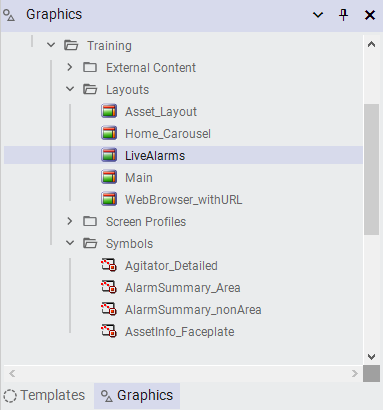
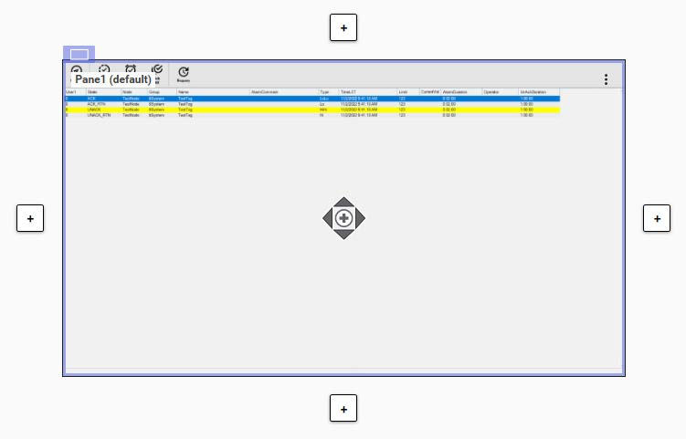
Create a Layout and Assign the AlarmApp
In the following steps, you will create a layout named LiveAlarms with one pane. Then you will
assign the AlarmApp to the pane.
1.
On the Graphics tab, in the Training \ Layouts toolset, create a new layout and name it
LiveAlarms.
2.
Double-click LiveAlarms to open it in the Layout Editor.
3.
On the Toolbox tab, enter a search string to find the AlarmControl and drag the control to
Pane1.
The control appears in Pane1.
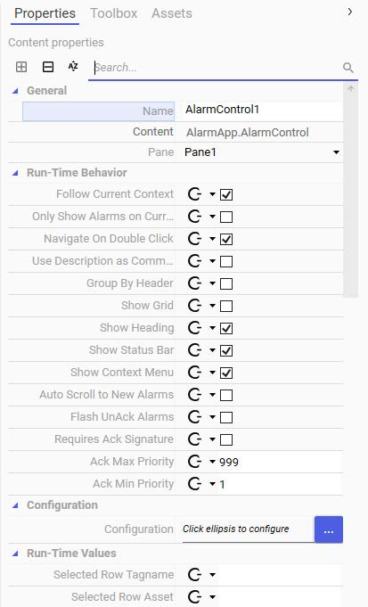
Lab 19 – Creating a Live Alarm Display and Managing Alarms at Runtime
Configure the AlarmApp
In the next steps, you will configure the AlarmApp with a default alarm query, columns, and sorting.
4.
On the Properties tab, to the right of the Configuration property, click the ellipsis button.
The Configuration dialog box appears.
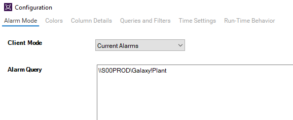
5.
On the Alarm Mode tab, in the Alarm Query field, change the default Alarm Query to the
following:
\\
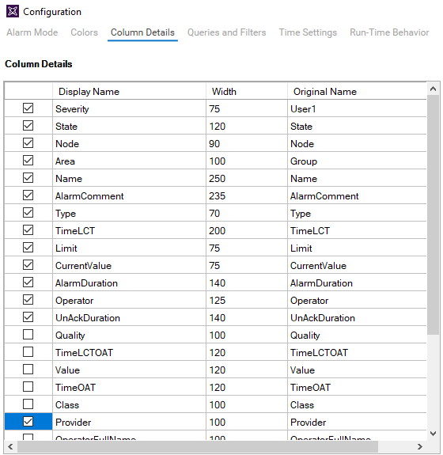
Lab 19 – Creating a Live Alarm Display and Managing Alarms at Runtime
6.
Select the Column Details tab and change the Display Name for User1 and Group as
follows:
Change User1 to Severity
Change Group to Area
7.
Check the check box to the left of Provider.
The list of Display Names should be as follows:
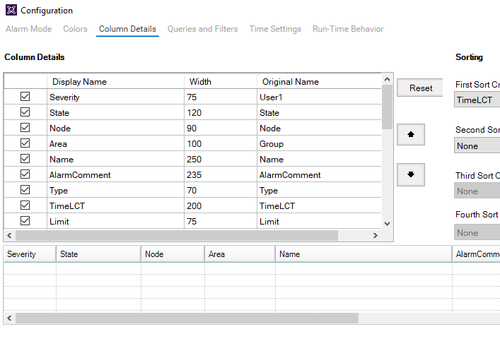
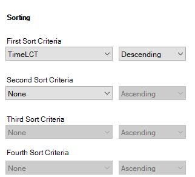
Notice that the preview column headings at the bottom of the Column Details tab change to
reflect the display name changes.
The example below shows Severity and Area in the preview column headings. You can scroll
to the right to see the Provider column.
8.
In the Sorting area, configure First Sort Criteria as TimeLCT and Descending.
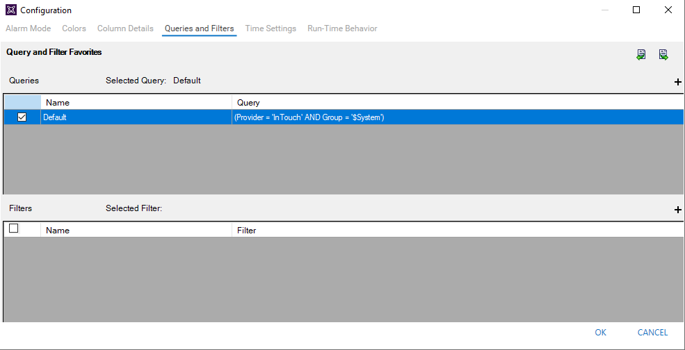
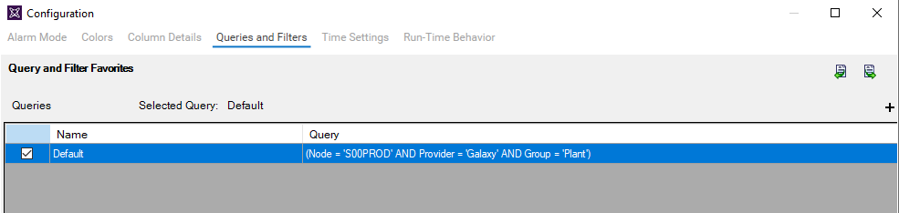
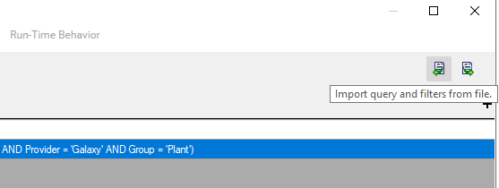
Lab 19 – Creating a Live Alarm Display and Managing Alarms at Runtime
Import Queries and Filters
Now you will import a query and several filters from an external xml file. The query and the filters
will allow you to view shelved alarms, as well as filter alarms based on severity level.
9.
Select the Queries and Filters tab.
Notice that the Default query does not yet reflect the query you entered on the Alarm Mode
tab. It will not change on this tab until you switch to another tab and switch back again.
10. Select the Alarm Mode tab, and then select the Queries and Filters tab again.
Notice that the Default query now reflects the query you entered on the Alarm Mode tab.
11. On the Queries and Filters tab, click Import query and filters file.
The Open dialog box appears.
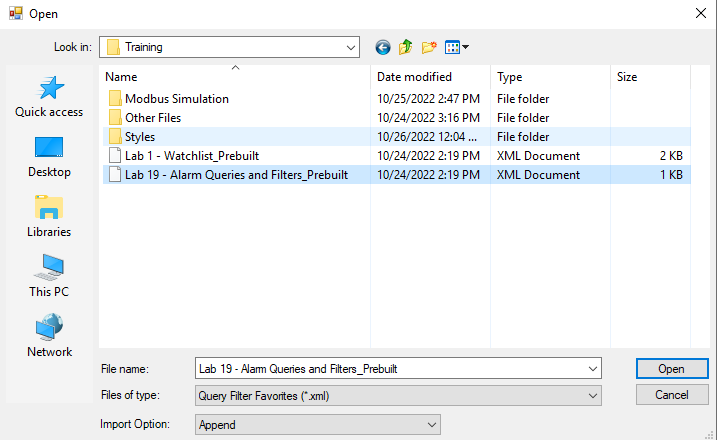
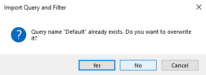
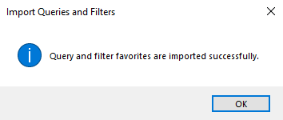
12. Navigate to C:\Training, select the Lab 19 - Alarm Queries and Filters_Prebuilt.xml file,
and click Open.
The Import Query and Filter dialog box appears.
13. Click No to avoid overwriting the existing Default query.
A message indicates queries and filter favorites are imported successfully.
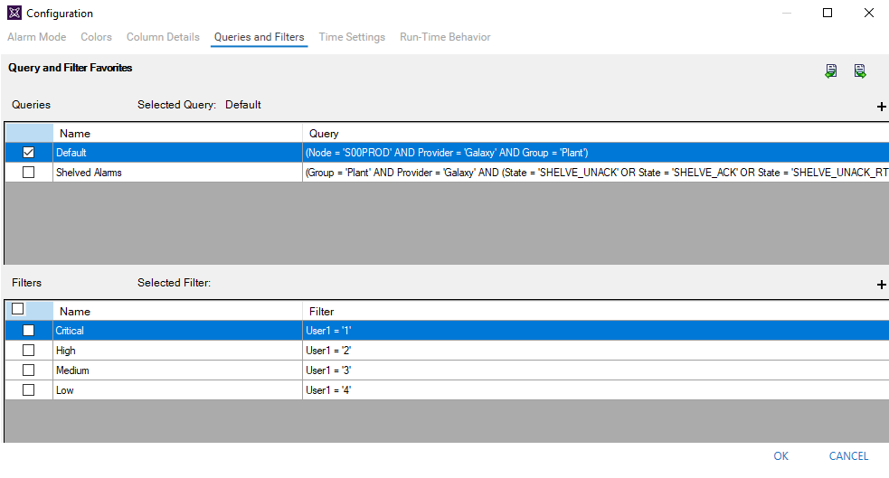
Lab 19 – Creating a Live Alarm Display and Managing Alarms at Runtime
14. Click OK to close the message.
Notice that a new query named Shelved Alarms and four filters named Critical, High,
Medium, and Low have been imported.
15. Click OK to close the Configuration dialog box.
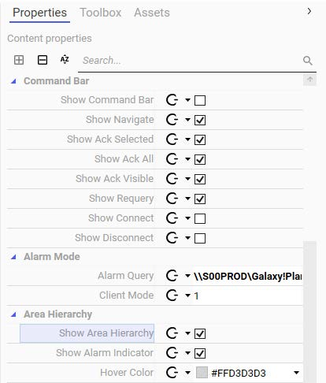
Enable Area Hierarchy Panel and Disable Command Bar
Now you will configure AlarmControl properties to enable the area hierarchy panel and disable the
command bar, which is designed mainly for touch screen users.
16. On the Properties tab, configure the following properties:
17. Save and close the LiveAlarms layout, and check it in.
Command Bar \ Show Command Bar:
unchecked
Area Hierarchy \ Show Area Hierarchy:
checked
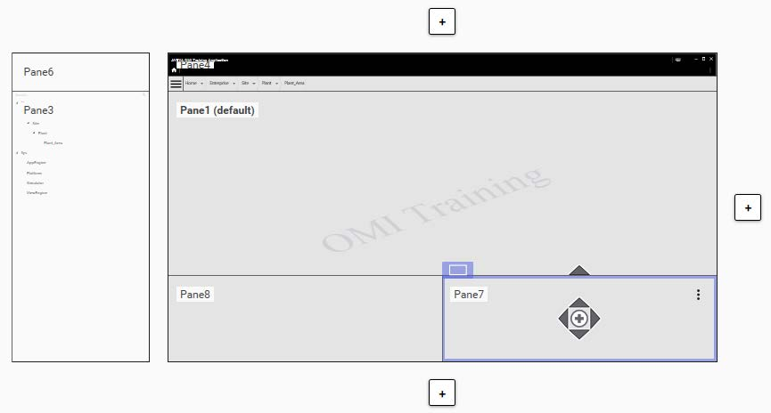
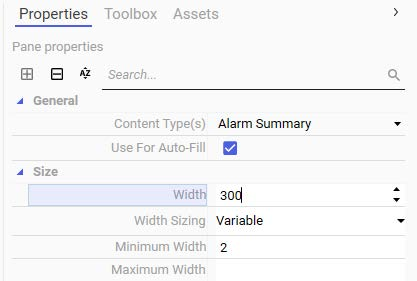
Lab 19 – Creating a Live Alarm Display and Managing Alarms at Runtime
Update the Main Layout with a Tabbed Pane
In the following steps, you will add a tabbed pane to the Main layout.
18. On the Graphics tab, in the Training \ Layouts toolset, double-click Main to open it in the
Layout Editor.
19. Select Pane7 at the bottom of the layout.
20. Add a new pane to the left of Pane7.
The name of the new pane is Pane8.
21. With Pane7 selected, on the Properties tab, update its Size \ Width property to 300.
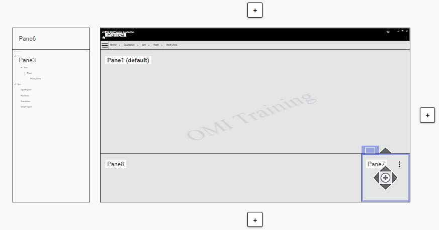
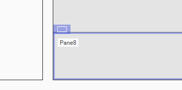
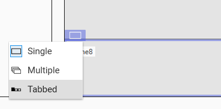
Pane7 is resized in the preview area.
22. Select Pane8, and click the Change Presentation Style button at the top of the pane.
A drop-down list of presentation styles appears.
23. Select the Tabbed presentation style.
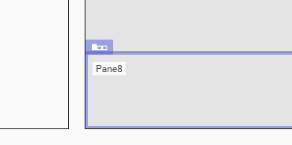
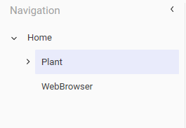
Lab 19 – Creating a Live Alarm Display and Managing Alarms at Runtime
Notice the icon at the top of Pane8 changes to indicate it is a tabbed pane.
24. Save and close the Main layout, and check it in.
Associate the LiveAlarms Layout with a ViewApp Navigation Item
In the following steps, you will associate the LiveAlarms layout with the Plant navigation item by
assigning it to the tabbed pane of the Main layout from within the ViewApp Editor.
25. Switch to the ViewApp Editor.
26. In the Navigation list, select Plant.
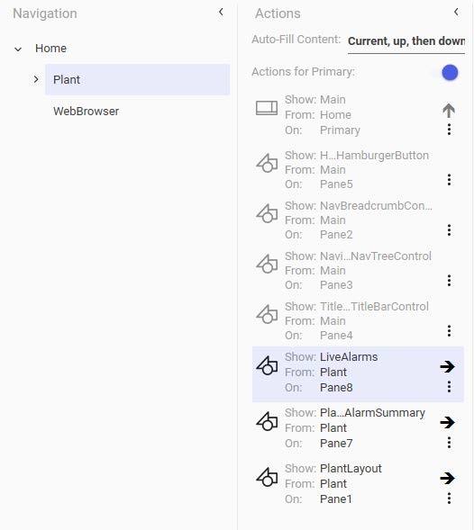
27. On the Toolbox tab, enter a search string to find the LiveAlarms layout and drag it to Pane8.
Because the content is assigned to a tabbed pane, it does not display in the pane in the
preview area. You can review the Actions list to confirm that LiveAlarms is assigned to
Pane8.
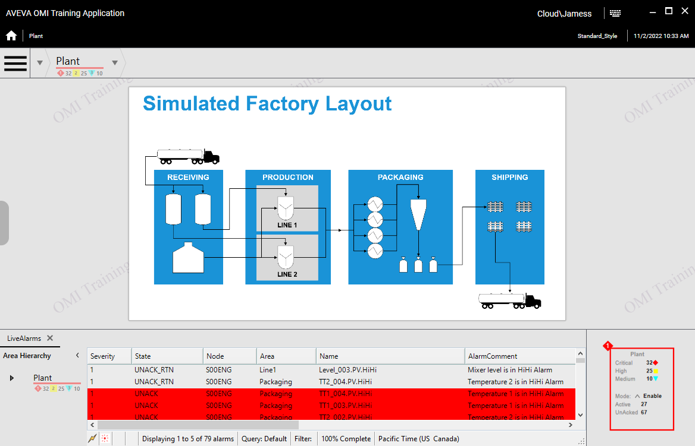
Lab 19 – Creating a Live Alarm Display and Managing Alarms at Runtime
Test the ViewApp in a Preview Session
Now you will test the ViewApp in a preview session. You will perform tests that show the runtime
behavior of the AlarmApp based on your configurations. You will acknowledge alarms, apply
queries and filters for alarms, shelve and unshelve alarms, hide and unhide alarms, and more.
28. Click Update to update the preview session.
The preview session opens.
Notice that cloud\jamess is still logged in and the preview is navigated to Plant.
At the bottom, alarms appear in the pane on the left and Plant.AlarmSummary is shown in
the pane on the right.
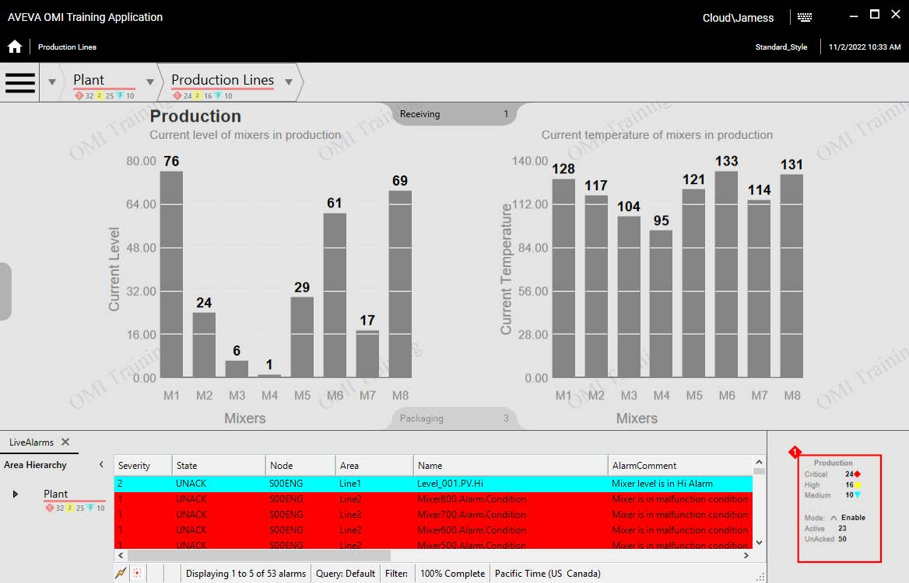
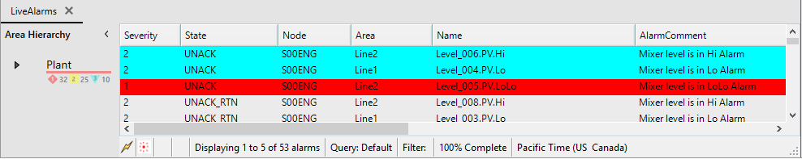
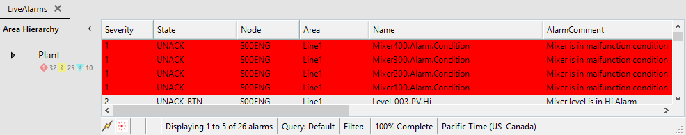
29. In the ViewApp, navigate to Production Lines.
Notice that alarms are listed in the alarms pane and the LiveAlarms tab is displayed. The
AlarmApp is configured to follow the context, so all alarms from the production area, including
subareas for Line1 and Line 2, are displayed in the AlarmApp.
30. In the ViewApp, navigate to Line1.
In the alarms pane, notice that all alarms from the Line1 area are displayed.
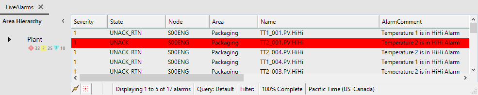
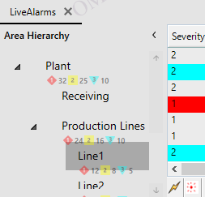
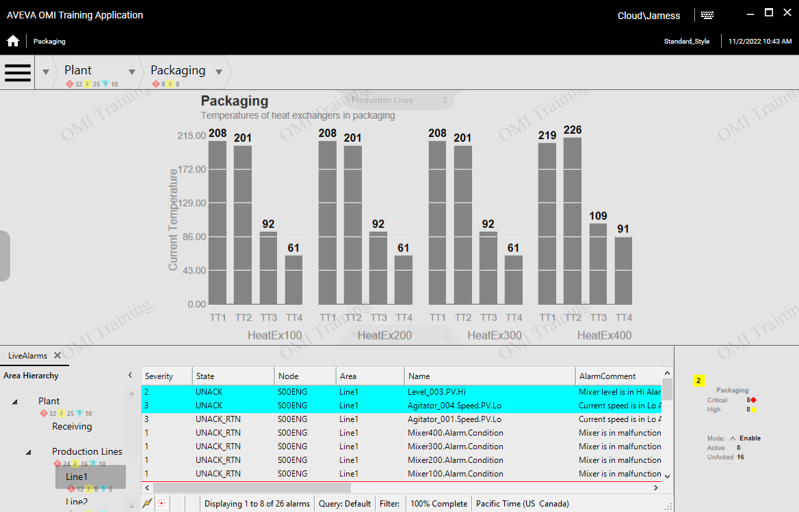
Lab 19 – Creating a Live Alarm Display and Managing Alarms at Runtime
31. In the ViewApp, navigate to Packaging.
In the alarms pane, notice that all alarms from the Packaging area are displayed.
32. In the AlarmApp, use the Area Hierarchy on the left to navigate to Line1.
In the alarms pane, notice that alarms from the Line1 area are displayed.
The selected item from the Area Hierarchy sets the query of the AlarmApp to the selected
item. It does not impact the current navigation in the ViewApp, so the ViewApp is still
navigated to Packaging.
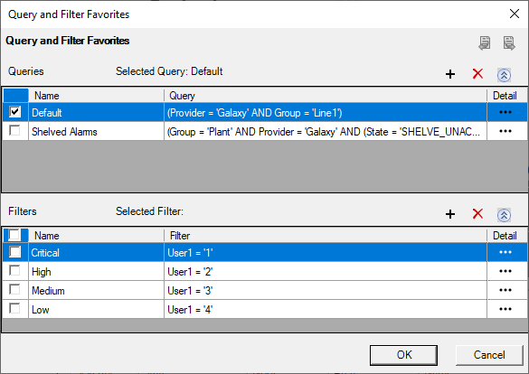
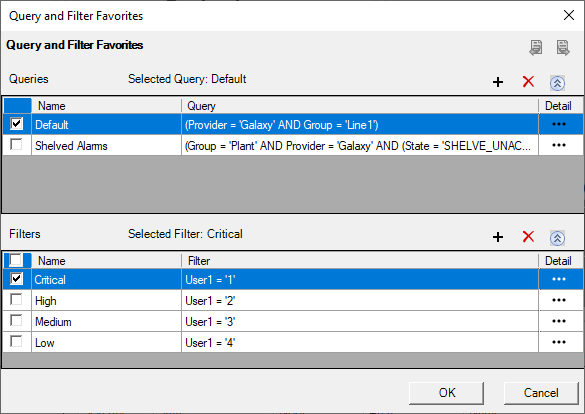
33. Right-click the alarm grid and select Queries and Filters.
The Query and Filter Favorites dialog box appears.
Notice that the Default query is listed and is selected.
34. Check the Critical filter to enable it, and then click OK to close the Query and Filter
Favorites dialog box.
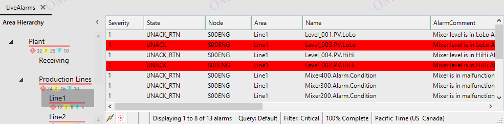
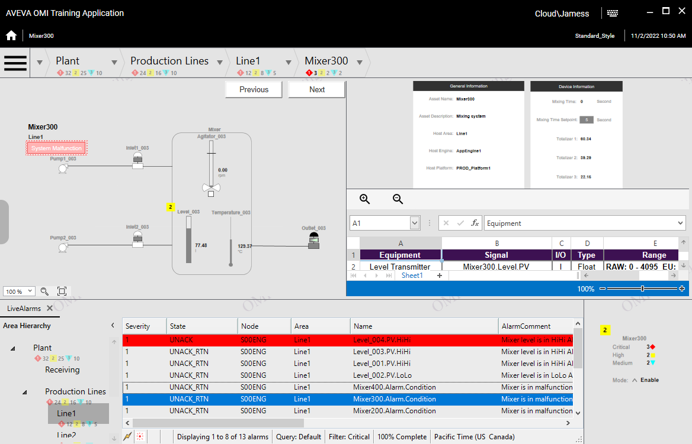
Lab 19 – Creating a Live Alarm Display and Managing Alarms at Runtime
Notice that only the critical alarms, displayed as Severity 1, appear in the alarm grid.
35. In the alarm grid, double-click a row for one of the mixers.
In the following example, a row for Mixer300.Alarm.Condition was double-clicked. Notice
that the ViewApp is navigated to Mixer300.
Notice the Area Hierarchy in the AlarmApp does not navigate to Mixer300.
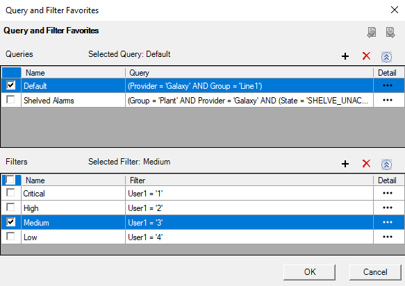
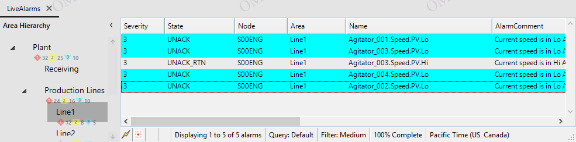
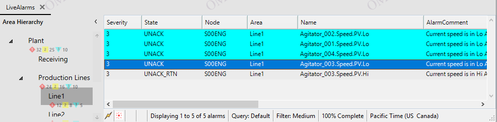
36. Right-click the alarm grid and select Queries and Filters.
The Query and Filter Favorites dialog box appears.
37. Uncheck Critical to remove the filter, check the Medium filter to enable it.
This is to filter all medium alarms to continue with further tests.
38. Click OK to close the Query and Filter Favorites dialog box.
Notice that only the medium alarms, displayed as Severity 3, appear in the alarm grid.
39. In the alarm grid, select a row with the State as UNACK.
In the following example, Agitator_003.Speed.PV.Lo is selected.
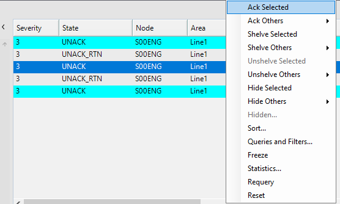
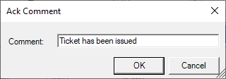
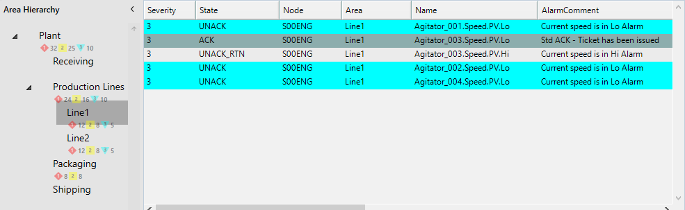
Lab 19 – Creating a Live Alarm Display and Managing Alarms at Runtime
40. Right-click the row and select Ack Selected.
The Ack Comment dialog box appears.
41. For Comment, enter Ticket has been issued, and click OK.
If the alarm is still active, you will notice that a new row displays the same alarm with state
updated as ACK. The AlarmComment column displays the acknowledge comment that you
have just entered. If the alarm is not active, it will disappear from the alarm grid.
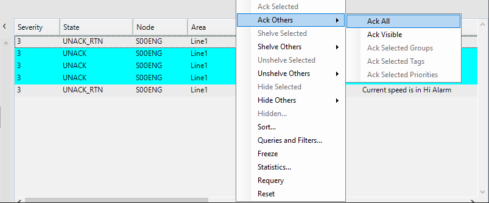
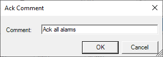
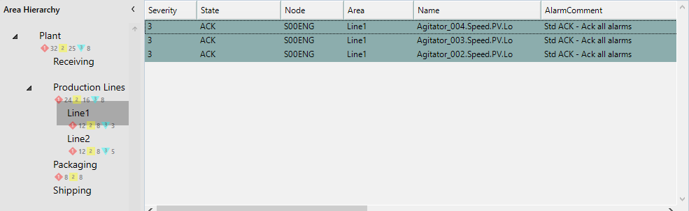
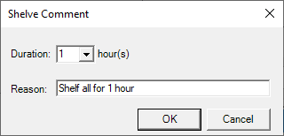
42. Right-click the alarm grid without selecting any row and select Ack Others | Ack All.
The Ack Comment dialog box appears.
43. For Comment, enter Ack all alarms and click OK.
In the alarm grid, notice that the active alarms display with a state of ACK.
In the example below, three alarms were acknowledged.
44. Right-click the alarm grid and select Shelve Others | Shelve All.
The Shelve Comment dialog box appears.
45. For Reason, enter Shelve all for 1 hour and click OK.
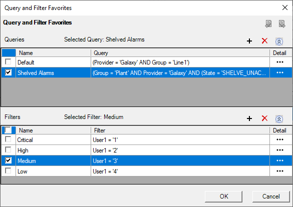
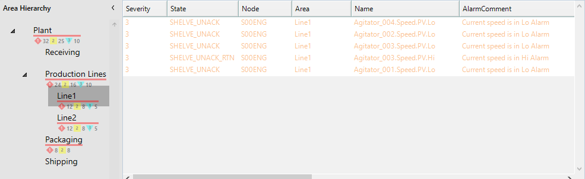
Lab 19 – Creating a Live Alarm Display and Managing Alarms at Runtime
In the alarms pane, notice that all Severity 3 alarms disappear from the display.
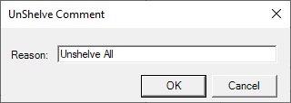
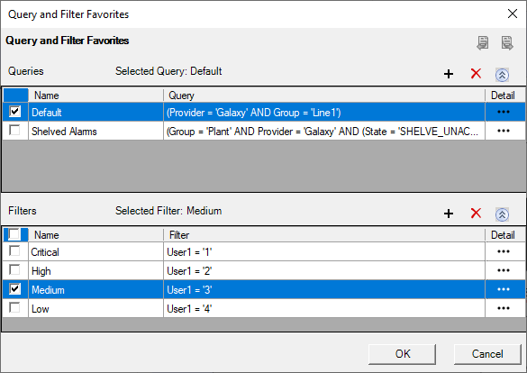
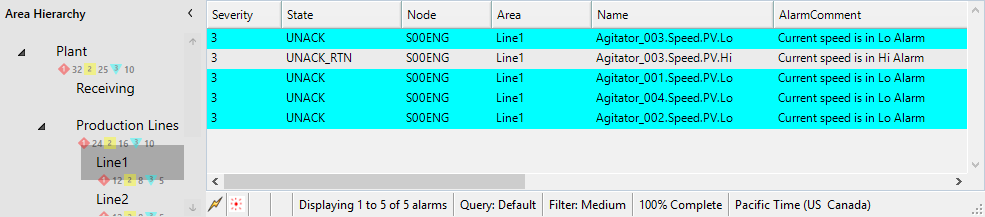
48. Right-click in the alarms pane and select Unshelve Others | Unshelve All.
The Unshelve Comment dialog box appears.
49. For Reason, enter Unshelve All and click OK.
Notice all alarms disappear from the alarms pane.
50. Open the Query and Filter Favorites dialog box, reset the query to the Default query, and
click OK.
In the alarms pane, notice that Severity 3 alarms are listed.
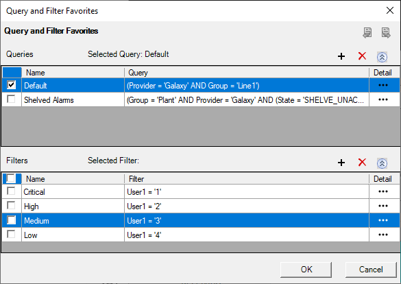
Lab 19 – Creating a Live Alarm Display and Managing Alarms at Runtime
51. Right-click the alarms pane and select Queries and Filters.
52. Uncheck the Medium filter to clear it so that all alarms in this area will be listed, and click OK.
53. Right click the alarms pane and select Freeze.
In the alarms pane, notice that the alarms stop updating and there is an icon on the status bar
indicating the current display is frozen.
54. Right-click in the alarms pane and select Freeze again to unfreeze the display.
55. Right-click in the alarms pane and select Hide Others | Hide All.
Notice that all alarms disappear from the display and there is an icon on the status bar
indicating that alarms are hidden.
If you move your cursor over the icon, a tool tip shows the number of alarms that are hidden.
56. Right-click in the alarms pane and select Hidden.
The Hidden Alarms dialog box appears.
Lab 19 – Creating a Live Alarm Display and Managing Alarms at Runtime
57. Select all alarms in the list and click Unhide.
Review the lab steps above and list the main configuration actions you completed.
Consider the dependencies between steps and how skipping one might affect the outcome.